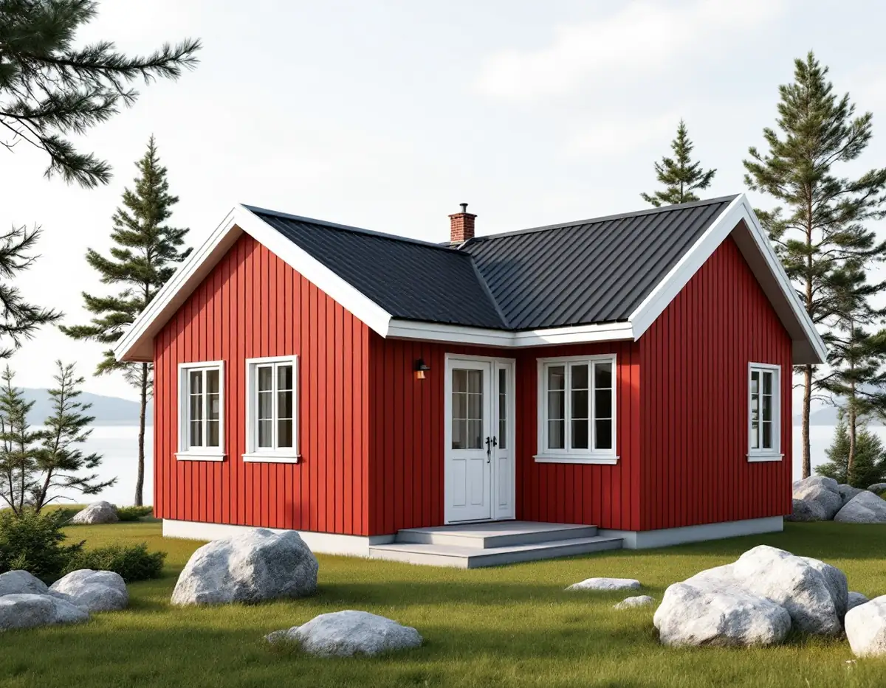
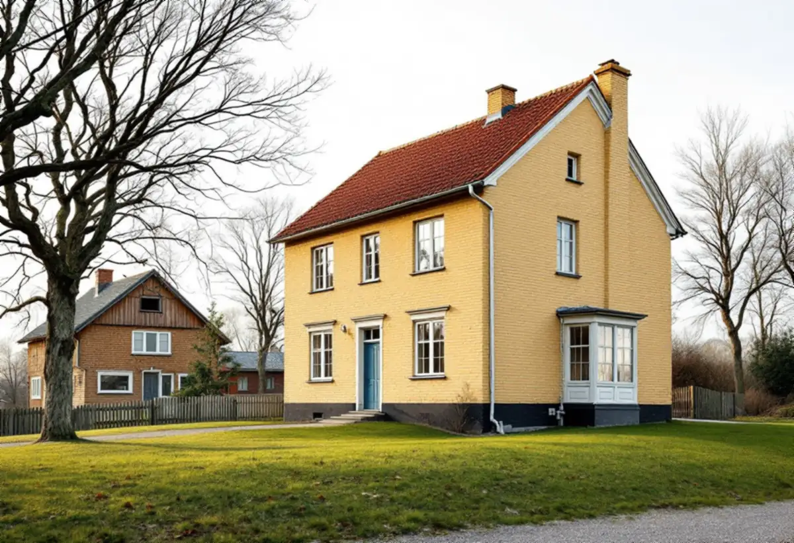

Husets lista
Vi tar fram inventeringens bevarandevärda detaljer eller detaljplanens bestämmelser.
I Gustavsberg har kommunen gått igenom husen inom riksintresset ett för ett och skrivit ner vilka detaljer som ska bevaras. Fönstren finns med på nästan varje lista. Geal Entreprenad AB byter och renoverar fönster i Gustavsberg, Hemmesta, Ingarö och övriga Värmdö och lämnar ett skriftligt kostnadsförslag efter ett gratis platsbesök.

På uppdrag av Värmdö kommun gjorde Sweco Architects 2018 en byggnadsinventering inom riksintresset för kulturmiljövården i Gustavsberg. Varje byggnad har beskrivits, värderats och klassats i en tregradig skala med färgerna blått, grönt och gult, från mycket högt till visst kulturhistoriskt värde. För varje hus finns en lista med rubriken karaktär och bevarandevärda detaljer.
Enligt inventeringen är det de listade egenskaperna som ska respekteras för att underhåll och ändringar ska bli varsamma. Den påpekar också att varsamhetskravet gäller all bebyggelse, och att en ovarsam förändring av ett hus med visst kulturhistoriskt värde kan få lika stora konsekvenser som för ett hus med högt värde.
Fönstren återkommer på listorna i många former: fönstersättning och fönsterstorlek, enluftsfönster med smalt vädringsfönster och pivåfönster, tvåluftsfönster med tre rutor i varje luft och ursprungliga bågar i en bestämd kulör. Innan vi föreslår något tar vi därför fram listan för just ditt hus.

Höjdhagen ritades av Olof Thunström och var det första nyproducerade bostadsområdet i Kooperativa förbundets regi. Mellan 1938 och 1945 uppfördes här 69 friliggande enfamiljshus för de anställda vid fabriken, de så kallade vinkelbodarna. Inventeringen beskriver husen med rödmålad locklistpanel, smäckra fönsterbågar, smala fönsterfoder och ett mycket flackt sadeltak.
För husen som har klassats står fönster, dörrar och skärmtak som är ursprungliga för byggnaden bland de bevarandevärda detaljerna, liksom färgsättningen med faluröd fasad, vitmålade fönster och takbrädor och grönmålade källarfönster. Inventeringen nämner också att Thunström 1960 ritade en tillbyggnad på norra vinkelarmen och att flera hus senare har byggts till på det sättet.
I ett sådant hus är bågarnas smala dimensioner en stor del av uttrycket. Ett nytt fönster med grövre profiler skulle märkas direkt, och Boverket påminner om att grövre snickerier även släpper in mindre dagsljus. Ska panel och knutar målas samtidigt, se målare på Värmdö.
Längs Kvarntorpsvägen står tre så kallade Kullenhus i gult tegel från 1884–1889. Bland deras bevarandevärda detaljer listar inventeringen smala stående fönster med tre respektive sex rutor i varje luft och fönsteröverstycken med stående tegel. Inventeringen noterar att husen vid den senaste renoveringen har fått tillbaka spröjsade fönster.
De faluröda fyrfamiljshusen från 1907–1908, ritade av Knut Perno Peterson, har fönster med spröjs bland sina bevarandevärda detaljer, och vita snickerier mot den röda panelen. Utmed Villagatan beskriver inventeringen också en variant från 1909–1911 med två större takkupor och stora spröjsade fönster som ger ljus åt övervåningen.
Exemplet med Kullenhusen visar att ett fönsterbyte också kan gå åt rätt håll: när tidigare förenklingar rättas till kommer husets ursprungliga indelning tillbaka. Vi mäter upp spröjs och rutformat och beställer fönster efter dem.
Värmdö kommun kräver inget bygglov för nya fönster på en- och tvåbostadshus, men däremot för en fasadändring som nya fönster om fastigheten ligger i ett kulturhistoriskt särskilt värdefullt område eller byggnaden själv är särskilt värdefull. Kommunen räknar sina 14 riksintresseområden och omkring 55 utpekade kulturmiljöområden som särskilt värdefulla.
Kommunen skriver också att underhåll av en byggnad som är skyddad i detaljplan eller har särskilt bevarandevärde kräver anmälan och startbesked. Bland det som ska anpassas till omgivningen nämns fönster och dörrar. Kommunantikvarien ger råd, och kommunen föreslår att du fotograferar fastigheten och mejlar innan arbetet planeras.
Vi tar fram inventeringens bevarandevärda detaljer eller detaljplanens bestämmelser.
Bågar, glas, kulörer och indelning mäts upp och fotograferas.
Vid behov kontaktas kommunantikvarien, och lov eller anmälan förbereds.
Renovering, nya fönster, glas och målning anges var för sig och skriftligt.
Bågar lagas eller nya fönster monteras med samma indelning och kulör.
Vi går igenom resultatet med dig och lämnar uppgifter för husets underhåll.
För ett småhus godkänner Skatteverket rotavdrag för att reparera eller byta ut fönster och för att måla dem. Avdraget motsvarar högst 30 procent av arbetskostnaden, med ett tak på 50 000 kr per person och år och 75 000 kr tillsammans med rutavdrag.
Kostnader för material, resor och utrustning ingår inte, och du ska äga bostaden när arbetet görs. Avdraget dras direkt på fakturan.
Om fönstren ska renoveras eller tillverkas efter förlaga, hur många rutor och spröjs varje båge har, om ursprunglig kulör ska tas fram, om lov eller anmälan behöver förberedas och hur långt det är till huset. Platsbesöket är gratis och förslaget skriftligt.
Byta eller renovera fönster.
Fönsterbyte i Stockholm →Takbyte, takbesiktning och plåtarbeten.
Takläggare på Värmdö →Skärgård, vind och fritidshus.
Takrenovering på Värmdö →Fritidsområden, kulturmiljö och avlopp.
Attefallshus på Värmdö →Brunnsvatten, salt och eget avlopp.
Badrumsrenovering på Värmdö →Byggrätt, PFO-områden och strandskydd.
Byggföretag på Värmdö →Röd panel, vita snickerier och båthus i skärgårdsbyarna.
Fasadmålning på Värmdö →Sommarvillor, skyddade hus och helårsboende.
Fasadrenovering på Värmdö →Glasverandor och äldre fönster.
Fönsterrenovering på Värmdö →Fritidshus som blir permanentbostäder.
Golvläggare på Värmdö →Fritidshus, eget avlopp och Gustavsberg.
Köksrenovering på Värmdö →Skärgårdshus, fritidshus och bruksmiljö på Värmdö.
Målare på Värmdö →Plåttak och beslag på Värmdö.
Plåtslagare på Värmdö →Fritidshus som blir helårshus.
Snickare på Värmdö →Anmälan, kulturmiljö och tak i skärgårdsbyarna.
Takbyte på Värmdö →Fritidshusplaner och lovfria 30 m².
Tillbyggnad på Värmdö →VVS, varmvattnet och byggreglerna.
Totalrenovering på Värmdö →